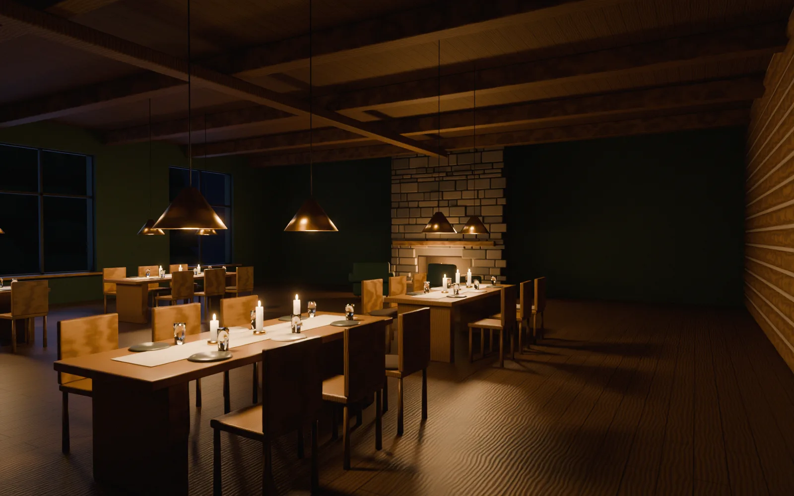
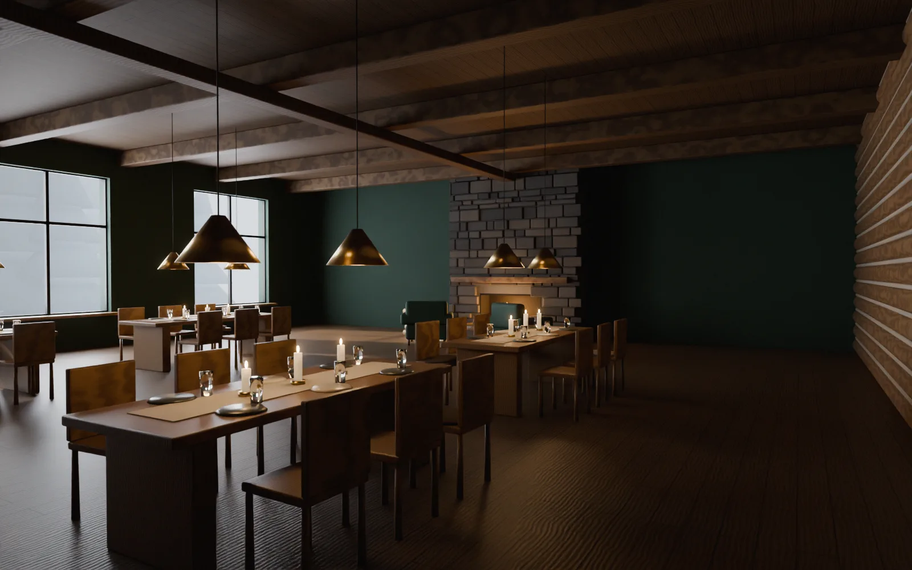

Предыстория
Ресторатор открывал второе заведение — с кухней народов Сибири: строганина, муксун, оленина, ягоды и травы тайги. Помещение 210 м² на первом этаже с тремя большими окнами во двор, где зимой лежит снег и стоят ели.

Ресторан сибирской кухни, где ужинают у огня
Ресторатор открывал второе заведение — с кухней народов Сибири: строганина, муксун, оленина, ягоды и травы тайги. Помещение 210 м² на первом этаже с тремя большими окнами во двор, где зимой лежит снег и стоят ели.
«Не охотничий домик с чучелами». Хотелось тепла и тишины тайги, но без сувенирности: место, куда идут на долгий ужин, а не сделать фото с рогами.
Мы собрали зал вокруг одного предмета — каменного камина с живым огнём. Две стены — сруб из бревна с паклей, остальное — глубокий хвойный зелёный. Меха лежат только там, где их хочется потрогать: на креслах у огня и на спинках стульев.
Днём зал светлый от снега за окнами. Вечером главный свет — огонь, свечи на столах и низкие латунные лампы. Гость сидит в тёплом круге света, а лес за стеклом становится синим.
Листайте вниз — кадры поедут вбок
Переключите время. Днём главный источник — окна и белый снег за ними. Вечером зал держат камин, свечи и низкие латунные лампы на высоте 1,75 м: свет падает на стол, а не в глаза.

Так зал выглядит на сайте ресторана: можно осмотреться, подойти к камину и выбрать место. Тяните мышью или пальцем, W A S D — шаг.
Демо-проект: концепция и визуализации созданы для витрины студии «Точка записи»; бюро и ресторан вымышлены.